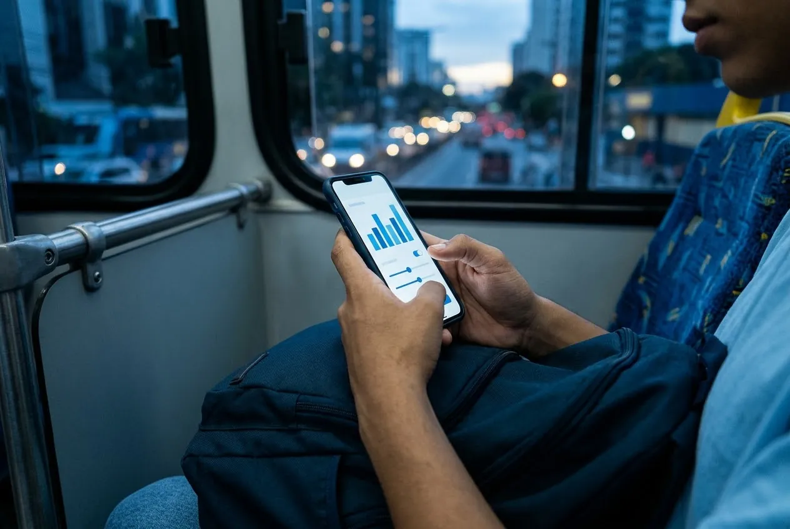
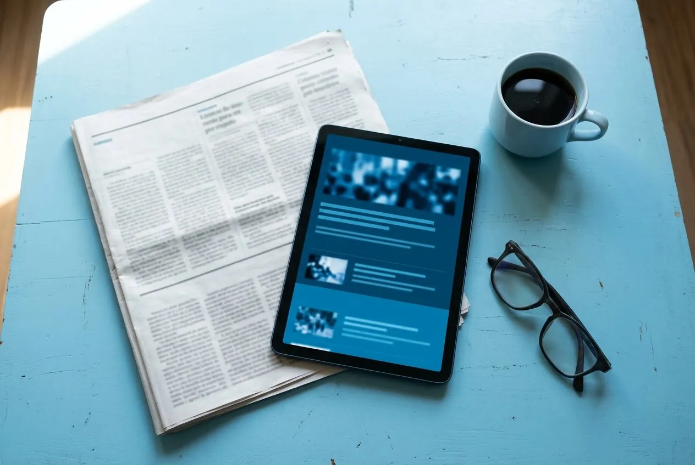
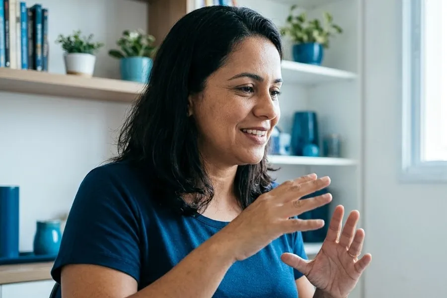

Quatro frentes de impacto social
O Bolso Coletivo não é só um texto: são ferramentas e ações para que mais gente consiga cuidar do próprio dinheiro.
-

FerramentaSimuladores financeiros
Três calculadoras que mostram, na hora, quanto um pequeno gasto vira em 10 anos, quanto cresce uma dívida no rotativo do cartão (com o teto da lei) e em quantos meses dá para montar uma reserva de emergência. Nada do que é digitado sai do navegador.
Impacto: transformar números abstratos em decisões concretas antes de a dívida acontecer.
Abrir os simuladores -
Ação
Oficinas "Necessidade, desejo e futuro"
Proposta de oficina de 50 minutos para escolas públicas e centros comunitários: os participantes separam cartões de gastos do dia a dia em três caixas e montam juntos um orçamento possível. O roteiro usa o conteúdo das páginas O tema e Aprofundamento.
Impacto: levar educação financeira a quem não chegaria a ela pela internet.
Pedir uma oficina -

InformaçãoNotícias do dia
Um robô reúne toda manhã as manchetes de veículos conhecidos sobre dívidas, golpes, benefícios, preços e formas de guardar dinheiro, descartando o que não ajuda no orçamento de casa.
Impacto: informação confiável no lugar de boatos e promessas de dinheiro fácil.
Ler as notícias -

InclusãoConteúdo sem barreiras
Todo o site funciona com teclado e leitor de tela, o vídeo tem legendas, o áudio tem transcrição e as imagens têm descrição. A meta é que nenhuma pessoa com deficiência fique de fora da conversa sobre dinheiro.
Impacto: acesso à informação financeira como direito, previsto na Lei Brasileira de Inclusão.
Ver os recursos